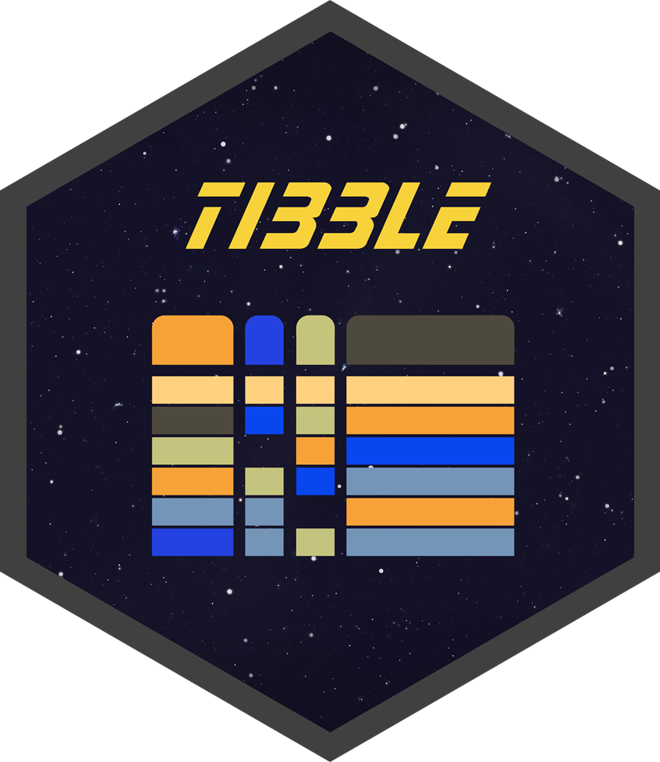
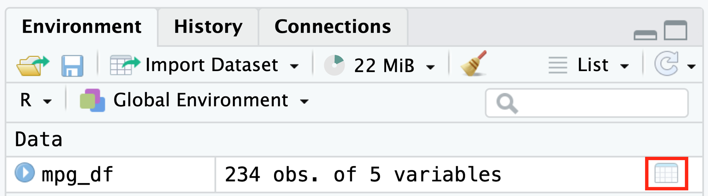
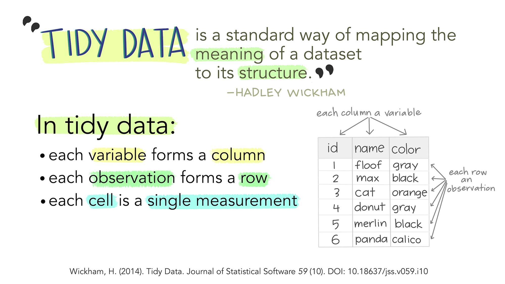
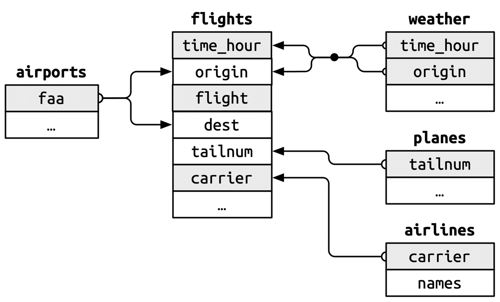
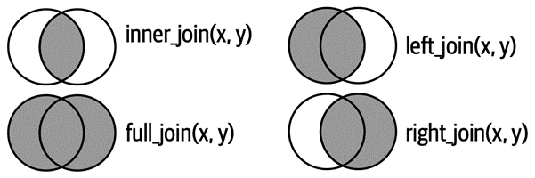

# A tibble: 6 × 4
country year cases population
<chr> <dbl> <dbl> <dbl>
1 Afghanistan 1999 745 19987071
2 Afghanistan 2000 2666 20595360
3 Brazil 1999 37737 172006362
4 Brazil 2000 80488 174504898
5 China 1999 212258 1272915272
6 China 2000 213766 1280428583Data Import and Tidying
Data Import
A data science process with R: 1st step
readr package

Main functions of readr package
| Names | Formats |
|---|---|
read_csv() |
콤마분리(comma-separated values, CSV) 형식 |
read_csv2() |
세미콜론분리(semicolon-separated) 형식 |
read_tsv() |
탭구분(tab-limited) 형식 |
read_delim() |
여타의 구분 형식 |
read_fwf() |
고정폭(fixed-width) 형식 |
read_table() |
공백구분 형식 |
read_log() |
아파치 형식(Apache-style)의 로그 파일 |
Main arguments of read_csv()
컬럼명:
col_names-
컬럼의 데이터 유형 지정과 파싱(parsing):
col_types = cols()
Related packages


readxl package
-
read_xls(), read_xlsx(), read_excel()sheetskipcol_namescol_types: “skip”, “guess”, “text”, “logical”, “numeric”, etc.
Another way

Tibble
tibble package
- A new type of dataframe provided by tidyverse

tibble vs. data.frame

Data viewer
Like an Excel view
-
How to initiate
View()functionClick on an icon in Environment window
-
Functions
Sorting
Scrolling
Filtering
Searching
Data viewer

Data viewer

Data Tidying
tidyr package

The concept of tidy data

The concept of tidy data

The concept of tidy data
개별 변수(variable)는 열(column) 하나를 차지한다. 즉, 개별 열에는 하나의 변수가 위치한다.
개별 관측개체(observation)는 하나의 행(row)을 차지한다. 즉, 개별 행에는 하나의 관측개체가 위치한다.
개별 값(value)은 하나의 셀(cell)을 차지한다. 즉, 개별 셀에는 하나의 값이 위치한다.
Examples: table1
Examples: table2
table2# A tibble: 12 × 4
country year type count
<chr> <dbl> <chr> <dbl>
1 Afghanistan 1999 cases 745
2 Afghanistan 1999 population 19987071
3 Afghanistan 2000 cases 2666
4 Afghanistan 2000 population 20595360
5 Brazil 1999 cases 37737
6 Brazil 1999 population 172006362
7 Brazil 2000 cases 80488
8 Brazil 2000 population 174504898
9 China 1999 cases 212258
10 China 1999 population 1272915272
11 China 2000 cases 213766
12 China 2000 population 1280428583Examples: table3
table3# A tibble: 6 × 3
country year rate
<chr> <dbl> <chr>
1 Afghanistan 1999 745/19987071
2 Afghanistan 2000 2666/20595360
3 Brazil 1999 37737/172006362
4 Brazil 2000 80488/174504898
5 China 1999 212258/1272915272
6 China 2000 213766/1280428583Benefits of tidy data

Benefits of tidy data

Benefits of tidy data

Core methods of data tidying

wide form vs. long form

Lengthening data
table4a# A tibble: 3 × 3
country `1999` `2000`
<chr> <dbl> <dbl>
1 Afghanistan 745 2666
2 Brazil 37737 80488
3 China 212258 213766table4a |>
pivot_longer(
cols = c(`1999`, `2000`),
names_to = "year",
values_to = "cases"
)# A tibble: 6 × 3
country year cases
<chr> <chr> <dbl>
1 Afghanistan 1999 745
2 Afghanistan 2000 2666
3 Brazil 1999 37737
4 Brazil 2000 80488
5 China 1999 212258
6 China 2000 213766Lengthening data

Widening data
table2# A tibble: 12 × 4
country year type count
<chr> <dbl> <chr> <dbl>
1 Afghanistan 1999 cases 745
2 Afghanistan 1999 population 19987071
3 Afghanistan 2000 cases 2666
4 Afghanistan 2000 population 20595360
5 Brazil 1999 cases 37737
6 Brazil 1999 population 172006362
7 Brazil 2000 cases 80488
8 Brazil 2000 population 174504898
9 China 1999 cases 212258
10 China 1999 population 1272915272
11 China 2000 cases 213766
12 China 2000 population 1280428583table2 |>
pivot_wider(
id_cols = c(country, year),
names_from = type,
values_from = count
)# A tibble: 6 × 4
country year cases population
<chr> <dbl> <dbl> <dbl>
1 Afghanistan 1999 745 19987071
2 Afghanistan 2000 2666 20595360
3 Brazil 1999 37737 172006362
4 Brazil 2000 80488 174504898
5 China 1999 212258 1272915272
6 China 2000 213766 1280428583Widening data

Data Join
dplyr package

Keys

Types of join

Types of join


Types of join